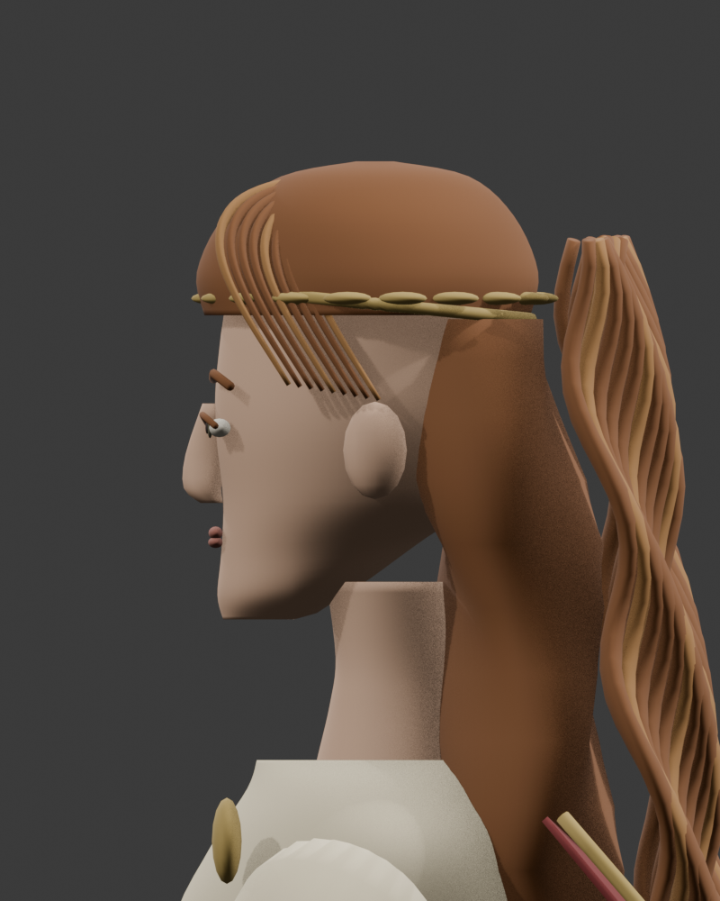
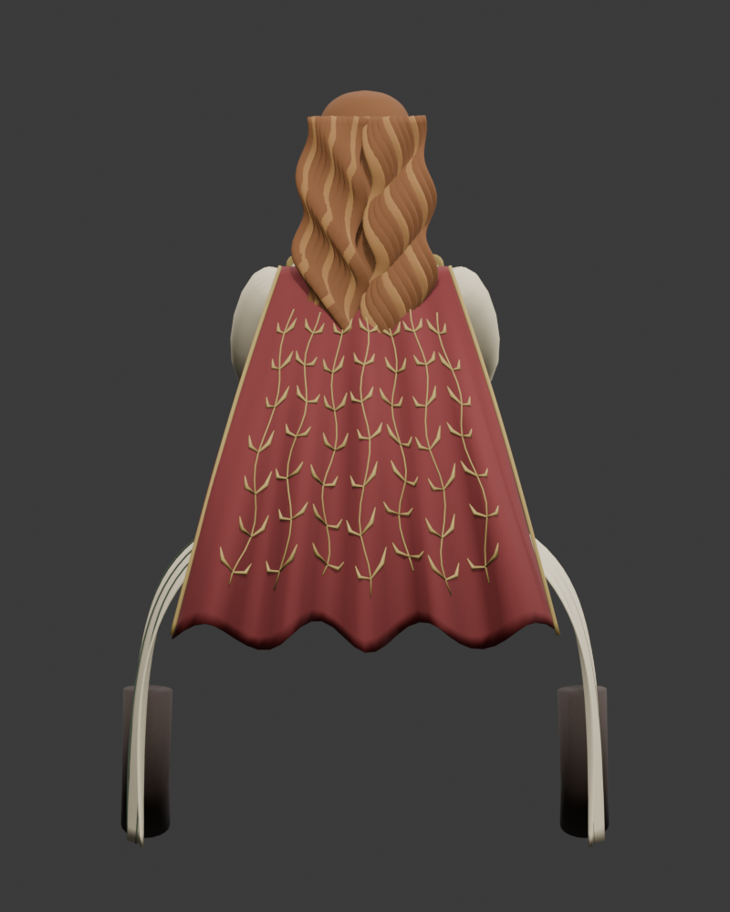
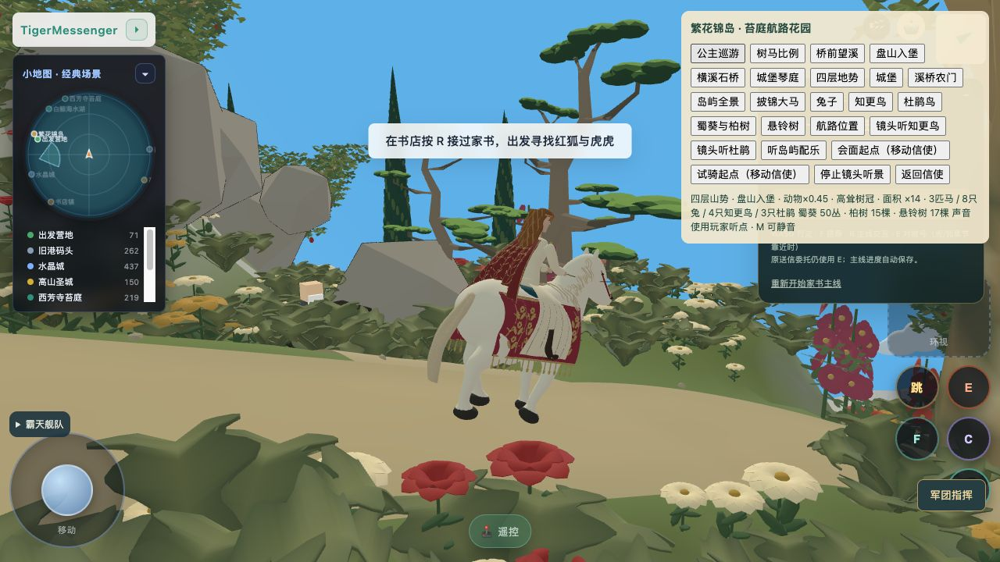

实际修改模型，已接正式巡游。连续脸部/肩颈曲面、收眼部突出、成组宽波浪头发、披风金色枝叶与袖口纹样。80,624三角面，保留骑乘关节。
与原目标仍有差距：自然脸型、头顶发流、细密织锦与衣物连续性。未宣称完全匹配目标。三视图为实际Blender模型；游戏截图为正式入口。
检查实际骑乘模型 · 进入正式游戏



正常游戏：reference-skills-v5 loaded，公主可见并沿当前路线移动。非完整往返通关证明。